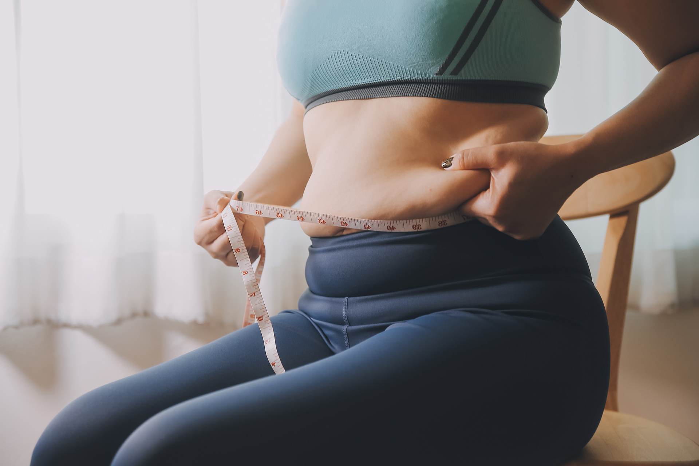

減重與營養


世界衛生組織從 1997 年開始將肥胖視為一種疾病，肥胖是一種慢性疾病，現代人因為生活壓力大，受體內荷爾蒙的影響，容易不小心攝取過多的情緒性進食而造成「壓力型肥胖」。目前台灣有超過80%的人都有體脂過高的困擾，其中男性體脂肪25%以上、女性體脂肪30%以上皆為過高定義。
| 性別 | 標準體脂肪率 (小於30歲) |
標準體脂肪率 (大於30歲) |
肥胖 |
|---|---|---|---|
| 男性 | 14-20% | 17-23% | 25%以上 |
| 女性 | 17-24% | 20-27% | 30%以上 |

有些人明明體重腰圍都正常，肚子看起來卻很大，表示脂肪開始囤積在腹部，這是身體的警訊，如果再不注意「腰瘦」問題，代謝症候群可能就會上身。
如何判定內臟脂肪與皮下脂肪呢?
脂肪依照堆積的部位不同，大致可分為『內臟脂肪』及『皮下脂肪』兩種。內臟脂肪最容易觀察的表徵便是腰圍大小，內臟脂肪過多會導致腹部肥胖(也就是腰圍過粗)。內臟脂肪活性大會釋出游離脂肪酸，流入肝臟導致胰島素阻抗，就會增加罹患糖尿病和其他各種代謝性疾病的機會。
 如何進行肥胖評估
如何進行肥胖評估
| 分級 | 正常 | 過重 | 肥胖 |
|---|---|---|---|
| BMI | ≧18.5 and < 24 | ≧24 and < 27 | ≧27 |
-
BMI分級法:
BMI=體重(公斤)÷身高(公尺)÷身高(公尺) -
腰圍評估法:
男性：腰圍超過90公分(35.4吋) 屬於肥胖
女性：腰圍超過80公分(31.5吋) 屬於肥胖
與肥胖有關常見疾病

減重與營養門診

抽血檢查：
透過抽血報告了解自己身體狀況，再由醫師做專業客製化建議。
減重門診適用對象
愛吃零食，無法控制食慾者
試過各種減重方式，但瘦不下來者
常應酬、熬夜、喝酒，生活作息不正常者
因肥胖產生併發症患者，如：三高、代謝症候群、糖尿病等
更年期女性
產後肥胖
